0010T20 COOLANT CHECK DENSITY AND TOP UP IF NECESSARY
- Path
- Procedures > 00 MAINTENANCE > 0010 UNITA' NUOVE E MANUT. PROGRAMMATA > 0010T VEHICLE OIL AND FLUIDS > 0010T20 COOLANT CHECK DENSITY AND TOP UP IF NECESSARY
- Kind
- repair procedure (removal / refitting; the operation number is the code)
- Applies to
- all engines; all production periods
- Interactive page
- https://sloeber94.github.io/elrnDB-aGt/en/#/125000836
Applies to: engines: 2.0 JTS; all production periods
Position the vehicle on a lift.
1. Undo the engine coolant reservoir cap.
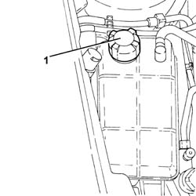
Applies to: engines: 2.0 JTS; all production periods
Proceed with the removal
Op. 7055B54 UNDER-ENGINE GUARD - R R.
1. Disconnect the lower coolant outlet hose from the radiator and drain the engine cooling system.
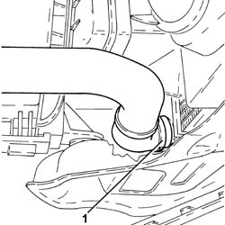
Applies to: engines: 2.0 JTS; all production periods
1. Open the bleed screw on the radiator fully.
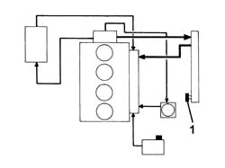
Applies to: engines: 2.0 JTS; all production periods
Connect the lower radiator coolant outlet hose.
Refill the system by slowly introducing the recommended coolant into the engine coolant reservoir until fluid comes out of the bleed on the radiator.
Type | Component | Description | Qty. | |
|---|---|---|---|---|
- | Fluid [I] | ENGINE COOLING CIRCUIT | Mixture of 50% Paraflu 11 for Alfa Romeo/distilled water | 7.2 |
Close the bleed on the radiator as soon as the fluid comes out.
Help to get rid of air pockets by squeezing the radiator inlet/outlet hoses several times and the system supply pipe between the reservoir and the engine.
1. Complete the refilling until the MAX reference is reached on the engine coolant reservoir.
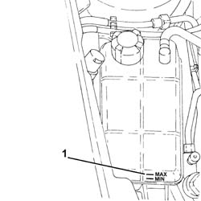
Applies to: engines: 2.0 JTS; all production periods
Fit the cap on the engine coolant reservoir.
Start up the engine and let it idle for about 2 minutes.
Carry out gradual, periodic acceleration (every 30 secs) until a speed of around 2500 - 3500 rpm is reached
Switch off the engine and wait for the fluid to cool down.
If necessary, undo the reservoir cap and top up to the MAX level.
Help to get rid of air pockets by squeezing the radiator inlet/outlet hoses several times and the system supply pipe between the reservoir and the engine.
At the end of this operation, make sure that the amount of fluid introduced at least equals that collected when the circuit was drained; if this is not the case, bleed the circuit once again.
Proceed with the refitting
Op. 7055B54 UNDER-ENGINE GUARD - R R.
Remove the vehicle from the lift.
Applies to: engines: 3.2 V6; all production periods
Position the vehicle on a lift.
1. With the engine cold, undo the engine coolant reservoir cap.
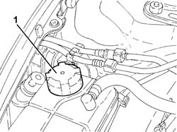
Applies to: engines: 3.2 V6; all production periods
Proceed with the removal
Op. 7055B54 UNDER-ENGINE GUARD - R R.
1. Disconnect the lower coolant outlet hose from the radiator and drain the engine cooling system.
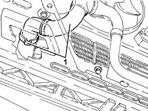
Applies to: engines: 3.2 V6; all production periods
Connect the lower radiator coolant outlet hose.
1. Open the bleed screw on the radiator fully.
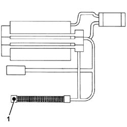
Applies to: engines: 3.2 V6; all production periods
Refill the system by slowly introducing the recommended coolant into the engine coolant reservoir until fluid comes out of the bleed on the radiator.
Type | Component | Description | Qty. | |
|---|---|---|---|---|
- | Fluid [I] | ENGINE COOLING CIRCUIT | Mixture of 50% Paraflu 11 for Alfa Romeo/distilled water | 9.2 |
Help to get rid of air pockets by squeezing the radiator inlet/outlet hoses several times and the system supply pipe between the reservoir and the engine.
Close the bleed on the radiator as soon as the fluid comes out.
1. Complete the refilling until the MAX reference is reached on the engine coolant reservoir.
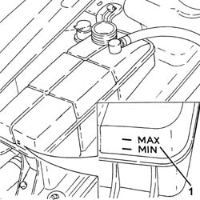
Applies to: engines: 3.2 V6; all production periods
Fit the cap on the engine coolant reservoir.
Start up the engine and let it idle for about 2 minutes.
Carry out gradual, periodic acceleration (every 30 secs) until a speed of around 3/4 of the maximum power is reached
Switch off the engine and wait for the fluid to cool down.
If necessary, undo the reservoir cap and top up to the MAX level.
Proceed with the refitting
Op. 7055B54 UNDER-ENGINE GUARD - R R.
Remove the vehicle from the lift.
Applies to: engines: 1.9 JTD 16V; all production periods
Position the vehicle on a lift.
Undo the engine coolant reservoir cap.
Proceed with the removal
Op. 7055B54 UNDER-ENGINE GUARD - R R.
1. Disconnect the lower coolant outlet hose from the radiator and drain the engine cooling system.
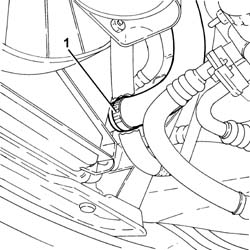
Applies to: engines: 1.9 JTD 16V; all production periods
1. Open the bleeds (1a) on the radiator (1b) and on the water pump rigid inlet pipe.
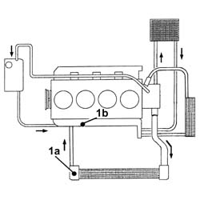
Applies to: engines: 1.9 JTD 16V; all production periods
Connect the lower radiator coolant outlet hose.
Proceed with the refitting
Op. 7055B54 UNDER-ENGINE GUARD - R R.
Remove the vehicle from the lift.
1. Refill the system by slowing introducing the recommended coolant into the engine coolant reservoir without ever exceeding the MAX level on the actual reservoir.
Type | Component | Description | Qty. | |
|---|---|---|---|---|
- | Fluid [I] | ENGINE COOLING CIRCUIT | Mixture of 50% Paraflu 11 for Alfa Romeo/distilled water | 7.2 |
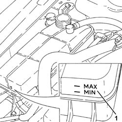
Applies to: engines: 1.9 JTD 16V; all production periods
Close the bleed on the radiator as soon as the fluid comes out.
Continue refilling until fluid comes out of the bleed on the water pump rigid inlet pipe, then close the bleed.
Complete the refilling until the MAX reference is reached on the engine coolant reservoir.
Start up the engine and let it idle for about 2 to 3 minutes.
If necessary, top up the engine coolant reservoir to the MAX level.
Place the engine coolant reservoir cap back in its housing.
Carry out periodic, gradually acceleration up to around 3000 rpm.
In order to check that the coolant is circulating correctly, switch on the heater at the maximum temperature and make sure that hot air comes out of the vents; after this check, switch the heater off.
If the fluid in the engine coolant reservoir is well below the MIN level, undo the cap very carefully and top up to the MAX level, then close it.
Wait until the fan comes on at least a couple of times.
Switch off the engine and wait for the fluid to cool down.
If necessary, with the engine cold, undo the reservoir cap and top up to the MAX level.
Applies to: engines: 1.8 T.SPARK; all production periods
- Position the vehicle on a lift.
- Undo the engine coolant reservoir cap.
- Disconnect the lower coolant outlet hose from the radiator and drain the engine cooling system.
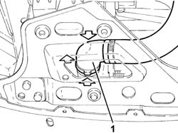
Applies to: engines: 1.8 T.SPARK; all production periods
- Disconnect the coolant return pipe from the engine coolant reservoir, reservoir side.
- Blow through the disconnected pipe with an air jet to drain it thoroughly.
- Connect the above pipe.
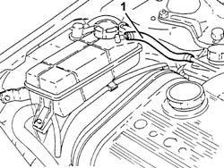
Applies to: engines: 1.8 T.SPARK; all production periods
- Open the bleed on the radiator.
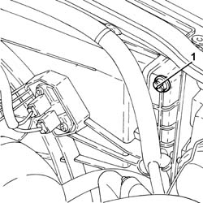
Applies to: engines: 1.8 T.SPARK; all production periods
- Open the bleed on the heater inlet hose.
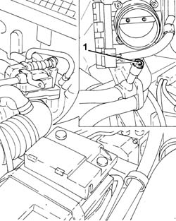
Applies to: engines: 1.8 T.SPARK; all production periods
- Connect the lower radiator coolant outlet hose.
- Remove the vehicle from the lift.
- Refill the system by slowing introducing the recommended coolant into the engine coolant reservoir without ever exceeding the MAX level on the actual reservoir.
Type | Component | Description | Qty. | |
|---|---|---|---|---|
Fluid [I] | ENGINE COOLING CIRCUIT | Mixture of 50% Paraflu UP/distilled water | 7.2 |
- Close the bleed on the radiator as soon as the fluid comes out.
- Continue refilling until fluid comes out of the bleed on the heater inlet hose, then tighten the latter.
- Complete the refilling until the MAX reference is reached on the engine coolant reservoir.
- Start up the engine and let it idle for about 2 to 3 minutes.
- If necessary, top up the engine coolant reservoir to the MAX level.
- Place the engine coolant reservoir cap back in its housing.
- Carry out periodic, gradually acceleration up to around 4000 rpm.
- If the fluid in the engine coolant reservoir reaches the MIN level, undo the cap very carefully and top up to the MAX level, then close it.
- Wait until the fan comes on at least a couple of times.
- Switch off the engine and wait for the fluid to cool down.
- If necessary, undo the reservoir cap and top up to the MAX level.
Topics linked from this page (1)
Topics that link to this page (43)
- 0010K20 20,000KM SERVICE COUPON, EMISSION CONTROL VERSION
- 0010K40 40,000KM SERVICE COUPON, EMISSION CONTROL VERSIONS
- 0010K60 60,000KM SERVICE COUPON - EMISSION CONTROL VERSIONS
- 0010K80 80,000KM SERVICE COUPON - EMISSION CONTROL VERSIONS
- 0010M01 100,000KM SERVICE COUPON, EMISSION CONTROL VERSIONS
- 0010M20 120,000KM SERVICE COUPON, EMISSION CONTROL VERSIONS
- 0010M40 140,000KM SERVICE COUPON - EMISSION CONTROL VERSIONS
- 0010M60 160,000KM SERVICE COUPON - EMISSION CONTROL VERSIONS
- 0010M80 180,000KM SERVICE COUPON - EMISSION CONTROL VERSIONS
- 1004B10 POWER UNIT WITH MANUAL GEARBOX - R + R
- 1004B24 POWER UNIT WITH MANUAL GEARBOX WITH HYDRAULIC SELECTION - R R
- 1016C10 SINGLE CYLINDER HEAD, REMOVED - OVERHAUL
- 1016D20 LEFT CYLINDER HEAD – R.R. AND REPLACING GASKET
- 1020D26 FLYWHEEL SIDE OIL SEAL COVER - R+R
- 1020D38 FLYWHEEL SIDE OIL SEAL - REPLACE
- 1020D51 CRANK SHAFT REAR MOUNT - APPLY SILICONE TO MATING SURFACES
- 1024B10 ENGINE FLYWHEEL - R + R FOR VERSIONS WITH MANUAL GEARBOX
- 1028H10 PISTON WITH CONNECTING ROD - R R
- 1048A10 AIR CLEANER FILTERING ELEMENT - REPLACE
- 1056B50 COOLANT TEMPERATURE SENSOR - R + R
- 1064A24 VARIABLE GEOMETRY TURBOCHARGER EXHAUST MANIFOLD ASSEMBLY SLEEVELEADING TO EXHAUST PIPE R R
- 1072C44 EXHAUST MANIFOLD HEAT SHIELD ON BULKHEAD - R+R
- 1080C80 EXHAUST GAS WATER HEAT EXCHANGER FOR EGR VALVE R R
- 1084B40 ENGINE OIL DELIVERY PIPE TO TURBOCHARGER - R + R
- 1084C10 STAFFA DI SUPPORTO DEL RADIATORE RAFFREDDAMENTO OLIO MOTORE - R.R.
- 1084C12 SCAMBIATORE DI CALORE OLIO MOTORE COMPLETO DEI TUBI DI ENTRATA E USCITA LIQUIDO DI RAFFREDDAMENTO - S.R.
- 1088B10 ENGINE COOLING TANK - R + R
- 1088B20 ENGINE COOLING RADIATOR - R + R
- 1088C10 WATER PUMP - R + R
- 1088C14 WATER PUMP - R + R WITH DRIVE BELT REMOVED
- 1088C40 THERMOSTAT- R + R
- 1088D10 LOWER SLEEVE FOR COOLANT OUTLET FROM RADIATOR - R + R
- 1088D14 UPPER SLEEVE FOR COOLANT INLET TO RADIATOR - R + R
- 1088D24 RIGID PIPE FOR COOLANT INLET TO WATER PUMP - R + R
- 1088E10 RADIATOR COOLING FAN - R + R
- 1810A20 CLUTCH - R + R
- 1820A24 THRUST BEARING LINKAGE - R + R
- 2110A10 MANUAL GEARBOX AND DIFFERENTIAL - R + R
- 2110C22 GEAR INPUT SHAFT SEALS - R R
- 4410D13 FRONT SUSPENSION BEAM - R R
- 4410D15 FRONT SUSPENSION BEAM COMPLETE WITH WISHBONES AND STABILISER BAR R R
- 5510C46 FLYWHEEL SIDE KNOCK SENSOR - R+R
- 5510C48 TIMING SIDE KNOCK SENSOR - R+R